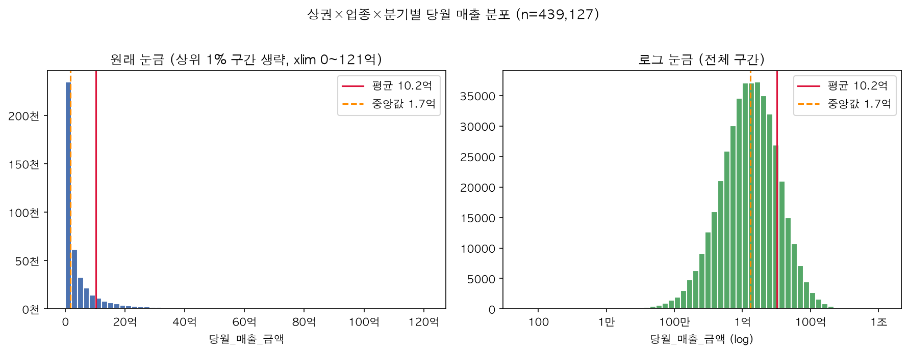
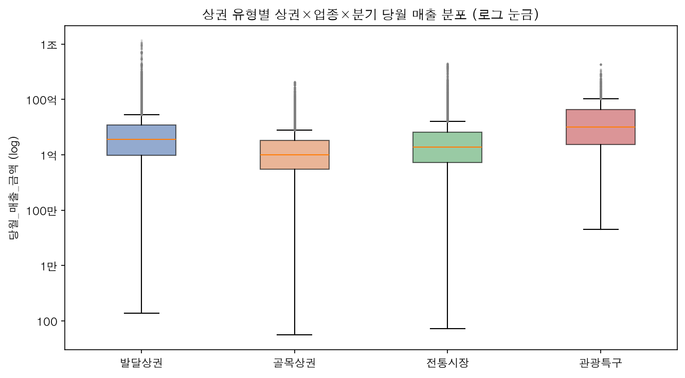
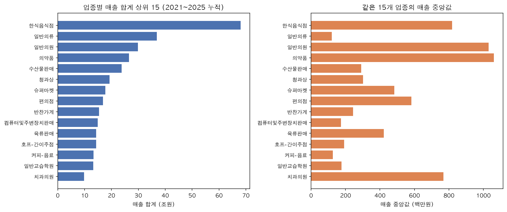
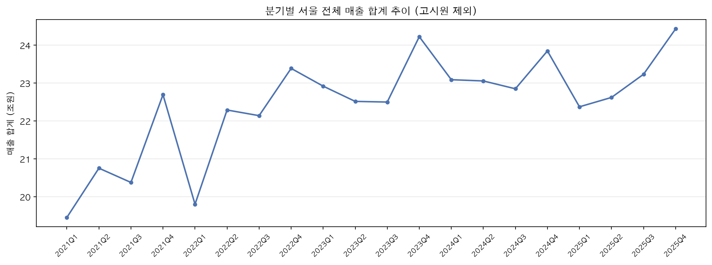
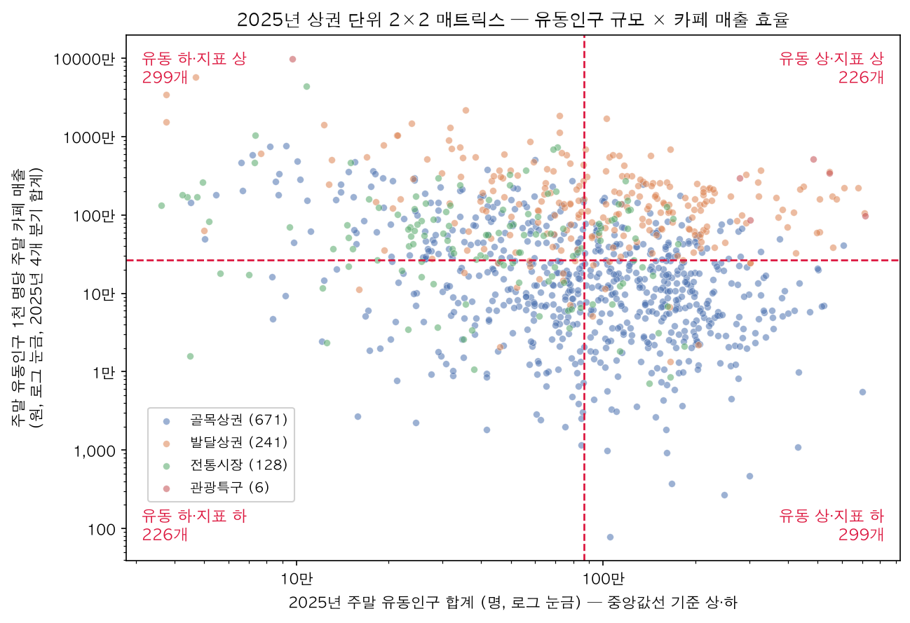

EDA 리포트
주제 주말 베이커리 카페 팝업스토어 어디에 열까? — 주말 유동인구 대비 카페·베이커리 매출 × 임대료로 고른 후보 상권
작성 이지민 · ABA3 1차 프로젝트 (유통) · 2026-10-21
대시보드 https://zmnl-debug.github.io/weekend-bakery-popup/
이 리포트는 데이터 개요, 전처리와 그 근거, 주요 변수의 분포와 관계를 정리한다. 숫자마다 계산 기준(분자·분모·단위·기간)은
references/metric_definitions.md, 가설별 판정 기록은references/hypothesis_log.md에 있다.
1. 데이터 개요
| 항목 | 내용 |
|---|---|
| 출처 | 서울열린데이터광장 「서울시 상권분석서비스」 (서울특별시) |
| 사용 파일 | 추정매출-상권(2021~2025 연도별), 길단위인구-상권, 직장인구-상권, 상주인구-상권, 점포-상권(2021~2025 연도별), 집객시설-상권, 상권변화지표-상권 |
| 분석 단위 (행 하나) | 한 상권의 한 분기 (상권_코드 + 기준_년분기_코드). 결합 테이블 21,972행 × 171열, 상권 1,211개 |
| 기간 | 2021년 1분기 ~ 2025년 4분기 (20개 분기, 매출·점포 기준) |
| 분석 업종 | 카페·베이커리 = 커피-음료 + 제과점 합산. 데이터에 '베이커리 카페'가 별도 업종으로 없어 두 업종 합산을 베이커리 카페 시장의 대리 지표로 쓴다 |
| 매출의 성격 | 카드 결제 기반 추정 매출, 물가 미반영(명목) 금액. 온라인 매출 미포함 |
사용한 데이터 도메인 — 서울시 상권분석서비스 6개 도메인을 상권 × 분기로 결합하고, 외부 데이터 3개로 보완했다.
| 도메인 | 파일 (출처) | 이 분석에서의 역할 |
|---|---|---|
| 매출 | 추정매출-상권 (서울시) | 카페·베이커리 주말 매출 = 핵심 지표의 분자, 연령·성별·시간대 매출 |
| 유동인구 | 길단위인구-상권 (서울시) | 토·일 유동인구 = 핵심 지표의 분모 |
| 직장·상주인구 | 직장인구-상권, 상주인구-상권 (서울시) | 머무는 사람(가설 2) |
| 점포 | 점포-상권 (서울시) | 카페·베이커리 점포 수, 프랜차이즈 비중(가설 3) |
| 집객시설 | 집객시설-상권 (서울시) | 지하철역·대학교·시설 수 |
| 상권 변화 | 상권변화지표-상권 (서울시) | 확장·정체 등 상권 국면 |
| 임대료 | 한국부동산원 임대동향조사 (공공데이터포털) | 후보 순위 조정 (모델링·인사이트 단계) |
| 실제 장소 | 카카오 로컬 API | 대리 지표 검증 (아래 6장) |
| 검색 관심 | 네이버 데이터랩 | 후보 관심도 (인사이트 단계) |
주요 컬럼
| 컬럼 | 의미 | 자료형 |
|---|---|---|
상권_코드, 상권_코드_명, 상권_구분_코드_명 |
상권 식별자, 이름, 유형(골목·발달·전통시장·관광특구) | 정수 / 문자 / 범주 |
기준_년분기_코드 |
연도×10 + 분기 (예: 20254) | 정수 → 연도·분기로 분리 |
주말_매출_금액 |
분기 동안 토·일 카드 추정 매출 (원) | 정수 |
토요일_유동인구_수, 일요일_유동인구_수 |
분기 동안 토·일 길단위 유동인구 (명) | 실수 |
총_직장_인구_수, 총_상주인구_수 |
상권의 직장·상주인구 (명) | 실수 |
유사_업종_점포_수, 프랜차이즈_점포_수 |
카페·베이커리 점포 수 | 정수 |
집객시설_수, 지하철_역_수, 대학교_수 |
상권 안 집객시설 | 실수 (빈칸 → 0) |
핵심 지표 — 주말 유동인구 1천 명당 주말 카페·베이커리 매출 (원, 상권 × 분기)
= 카페·베이커리 주말_매출_금액 ÷ ((토요일_유동인구_수 + 일요일_유동인구_수) ÷ 1,000)
매출에는 배달·동네 주민·법인카드 결제가 섞여 있어, 결제자가 지나간 사람인지 알 수 없다. 그래서 '전환율'이 아니라 유동인구 대비 매출 효율로 해석한다.
2. 데이터 결합과 전처리
2-1. 결합
| 단계 | 결과 |
|---|---|
| 추정매출-상권 2021~2025 이어 붙이기 | 439,141행 × 57열, 20개 분기 모두 존재, 결측·매출 0 이하 0건 |
| 카페·베이커리만 골라 상권 × 분기로 합산 | 21,972행 (두 업종 모두 있는 조합 8,363 / 한 업종만 13,609) |
| 인구·점포·시설·상권변화 파일 결합 (왼쪽 결합) | 파일별 미매칭 11~331행은 빈칸으로 유지 (신설 상권 등) |
- 상권 수는 연도별 1,576~1,581개로 거의 같고, 1,560개 상권이 5년 내내 있다 → 시간 순 분할에 문제 없음
- 업종
고시원은 2023년까지만 있어 전체 업종 분석에서 제외 (카페·베이커리 분석과는 무관)
2-2. 전처리 규칙과 근거
| 항목 | 처리 | 근거 |
|---|---|---|
| 파일 인코딩·열 이름 | cp949로 읽고, 2025년 점포 파일의 영문 열 이름(stdr_yyqu_cd 등)을 한글 열 이름으로 맞춤 |
그대로 이어 붙이면 같은 내용이 다른 열로 갈라짐 |
| 분기 코드 | 기준_년분기_코드를 연도(//10)·분기(%10)로 분리 |
20214 다음이 20221이라 그냥 정렬하면 순서가 어긋남 |
| 주말 유동인구가 너무 작은 행 | 주말 유동인구 하위 1%(8,666명 미만, 220행) 제외 | 분모가 작아 지표가 폭발 — 예: 청계산원터골은 주말 유동인구 8~700명인데 1천 명당 매출이 최대 72억 원. 산·하천 주변에서 길단위 유동인구가 거의 잡히지 않는 데이터 한계로 판단 |
| 집객시설 세부 열 빈칸 | 0으로 채움 (집객시설 파일과 매칭된 행만) | 원본 파일에 0이 하나도 없고 빈칸만 있음 → 빈칸 = 시설 없음 |
| 주말 매출 0원 (246행) | 유지, 로그는 log(1 + x) | 실제로 주말 매출이 없는 상권일 수 있음 |
| 카페 점포 수 | 유사_업종_점포_수 사용 |
유사_업종_점포_수 = 점포_수 + 프랜차이즈_점포_수 (전 행 일치). 점포_수는 프랜차이즈를 뺀 값 |
| 연령대 비중의 분모 | 연령을 알 수 있는 매출 합계 | 연령 미상 매출(법인카드 등) 비율이 업종마다 다름 (2024년 카페 12.9%, 한식 21.3%) |
2-3. 결측치·이상치·자료형 점검 (카페·베이커리 결합 테이블 21,972행)
| 점검 | 결과 | 처리 |
|---|---|---|
| 매출 결측·음수 | 0건 (추정매출 원본 439,141행 기준) | — |
| 유동인구 결측 | 11행 (유동인구 파일에 없는 상권 × 분기) | 지표 계산 불가 → 분석에서 빠짐 |
| 직장인구 / 상주인구 결측 | 33행 / 104행 | 빈칸 유지 (모델 HGB는 결측을 그대로 처리) |
| 집객시설 결측 | 331행 (파일에 없는 상권) | 빈칸 유지. 파일에 있는 상권의 세부 빈칸은 0 |
| 이상치 — 분모가 매우 작은 행 | 주말 유동인구 하위 1% 220행, 지표 최대 72억 원 | 제외 (위 2-2) |
| 이상치 — 주말 매출 0원 | 246행 | 실제 값으로 보고 유지 |
| 치우친 분포 | 지표·매출 모두 오른쪽으로 긴 꼬리 (3장) | 모델 타겟에 log(1+x) |
| 자료형 | 분기 코드는 정수(20214 → 20221 순서 문제), 상권 유형·상권 변화는 문자 | 연도·분기 분리, 범주형으로 변환 |
| 중복 | 상권_코드 + 기준_년분기_코드 중복 0건 (노트북에서 assert로 확인) |
— |
3. 분포
3-1. 전체 상권 × 업종 매출 — 오른쪽으로 크게 치우침

평균 10.2억 원, 중앙값 1.7억 원으로 평균이 중앙값의 6배다. 로그 눈금에서 1억 원 근처를 중심으로 종 모양이 되어, 이후 모델 타겟에는 로그를 씌운다.
3-2. 상권 유형별 매출 — 상권 수와 매출 규모가 반대

발달상권은 상권 수 16%로 매출 62%를, 골목상권은 상권 수 66%로 매출 18%를 차지한다. 상권당 중앙값은 관광특구 > 발달 > 전통시장 > 골목 순이다.
3-3. 업종별 매출 — 합계 순위와 업종당 매출이 다름

일반의류는 합계 2위지만 중앙값 1.2억 원(매장이 많아서 합계가 큼), 의약품·일반의원은 중앙값 10억 원 이상(매장 하나가 큼)이다.
3-4. 분기별 추이 — 4분기 계절성, 명목 기준 증가

매년 4분기가 가장 높다. 2021년 1분기 19.5조 원 → 2025년 4분기 24.4조 원으로 명목 기준 +25.6%이며, 물가가 반영되지 않아 실질 성장으로 단정하지 않는다.
3-5. 핵심 지표(주말 효율) 분포 — 상권 간 차이가 큼

상권 × 분기 21,741건(저유동 제외 후)에서 중앙값 약 24.6만 원, 상위 25% 경계가 하위 25% 경계의 약 15배다. 예를 들어 2025년 골목상권 중 1년간 주말 유동인구가 비슷한 마포FM(86만 명)과 수락산디자인거리(95만 명)의 1년간 주말 카페·베이커리 매출(4개 분기 합계)은 0.06억 원 vs 6.18억 원으로 약 100배 차이 난다.
3-6. 상권 유형별 주말 효율 — 행 수 불균형 주의

중앙값(2025년, 상권 단위)은 관광특구 319만 원 · 발달 138만 원 · 전통시장 51만 원 · 골목 12만 원이다. 이 차이는 누구나 예상하는 기본 조건이라, 이후 분석은 상권 유형을 통제한 뒤 남는 차이를 본다.
행 수는 골목상권 14,230(64.8%) · 발달상권 4,872(22.2%) · 전통시장 2,750(12.5%) · 관광특구 120(0.5%)으로 유형 간 불균형이 크다. 관광특구는 행이 적어 단독 결론을 내지 않고, 가설 확인은 같은 유형 안에서 비교한다. (회귀 문제라 클래스 불균형 대신 타겟의 치우침을 log 변환으로 다뤘다.)
4. 변수 사이의 관계 (가설 확인)
아래는 모두 상관관계이며 인과가 아니다. 가설별 판정 과정은
references/hypothesis_log.md참고.
가설 1 — 주말 유동인구가 많다고 주말 효율이 높은 것은 아니다 → 지지

- 주말 유동인구와 주말 카페·베이커리 매출의 스피어만 상관은 0.24로 약하다 → 사람이 많이 지나간다고 매출이 비례해서 늘지 않는다
- 유동인구가 많은 구간일수록 1천 명당 매출은 오히려 낮다(스피어만 −0.21; 골목 −0.29, 발달 −0.22, 전통시장 −0.22)
- 단, 지표의 분모가 유동인구라 매출이 유동인구만큼 늘지 않으면 음의 관계가 수식상 생긴다 → "많을수록 나쁘다"가 아니라 "많다고 좋은 건 아니다"까지만 주장
가설 2 — 머무는 사람이 많은 상권이 효율이 높다 → 부분 지지

상권 유형 × 주말 유동인구 5분위 그룹 안에서 비교했다.
| 변수 (원래 값) | 하 → 상 구간 중앙값 | 그룹 안 스피어만 |
|---|---|---|
| 직장인구 | 2.9배 | 0.31 |
| 집객시설 수 | 3.2배 | 0.35 |
| 상주인구 | 0.7배 | −0.04 (무관) |
트러블슈팅 — 처음엔 '직장인구 ÷ 주말 유동인구' 같은 비율로 봤는데, 지표와 분모가 같아 상관이 부풀려졌다(무작위 값을 유동인구로 나눠도 상관 0.15). 비율 대신 원래 값으로, 같은 유형·같은 유동인구 수준끼리 다시 비교했다(직장인구 0.55 → 0.31).
가설 3 — 카페·베이커리가 몰린 상권은 손님을 나눠 먹기보다 더 끌어온다 → 약하게 지지

점포가 많으면 합계 매출이 커지는 건 당연하므로, 타겟을 점포당 주말 매출로 바꿔 같은 그룹 안에서 비교했다. 점포 수 하 → 상 구간에서 점포당 주말 매출 중앙값이 1.9배(스피어만 0.26)로, 잠식보다는 집적 쪽이다. 프랜차이즈 비중(0.30)은 점포 수 분모를 공유해 부풀려졌을 수 있어 판정을 보류했다.
참고 — 주말 유동인구 × 효율 2×2

'유동인구 상 + 효율 상' 상위 30개 중 25개가 발달상권(잠실역·명동 등)이었다. 상권 유형이라는 기본 조건이 그대로 드러나, 후보 선정은 모델의 '기대 대비 효율'로 하기로 했다.
5. EDA에서 모델링으로
- 효율은 분기 사이에 거의 변하지 않아, 다음 분기는 "지난 분기 그대로"를 이기기 어려웠다(RMSLE 0.670 vs 상권 조건을 더한 모델 0.676).
- 1년 뒤를 예측하면 상권 조건을 더한 모델이 기준선 대비 오차를 5.2% 줄였다(0.938 → 0.890). → 메인 타겟을 1년 뒤 효율로 정했다 (모델링 보고서에서 상세).
- 1년 뒤 모델에서 조건 변수의 방향(부분 의존도·선형회귀 부호가 일치한 것): 카페·베이커리 점포 수 +, 프랜차이즈 비중 +, 직장인구 +, 집객시설 수 −, 지하철역 수 − (
notebooks/2.3-feature-direction.ipynb).
6. 한계와 편향
- 매출·유동인구 모두 추정치이며 매출은 명목 금액이다.
- 카페·베이커리 합산은 베이커리 카페의 대리 지표이고, 제과점에는 프랜차이즈 베이커리(생활형 구매)가 섞여 있다.
- 검증(카카오 로컬, 상권 중심 반경 500m, 1,107곳): 카카오 '카페' 수와 커피 점포 수 상관 0.48, '베이커리'와 제과점 점포 수 0.39로 같은 방향(중간). '베이커리카페' 표방 장소는 상권당 중앙값 1곳, 제과점 점포 수와 0.23 (
notebooks/3.2). - 분석 단위가 상권이라 결론은 상권 선택에만 쓴다(점포 하나의 결정으로 옮기지 않음).
- 상관관계이며 인과가 아니다.
- 편향: ① 카드 결제 기반 추정이라 현금 결제와 온라인 주문이 빠진다. ② 연령 미상 매출(법인카드 등)이 있어 오피스 상권의 연령 구성이 덜 잡힌다. ③ 길단위 유동인구는 추정치라 산·하천 주변에서 낮게 잡혀, 저유동 제외로 외곽 상권이 분석에서 빠진다. ④ 업종 분류상 '베이커리 카페'가 없어 커피·제과점 합산으로 대신했다.
데이터 출처
- 서울열린데이터광장 「서울시 상권분석서비스」 (서울특별시) — https://data.seoul.go.kr/dataList/3/literacyView.do
- (모델링·인사이트 단계 외부 데이터) 한국부동산원 「상업용부동산 임대동향조사」 소규모상가 임대료 (공공데이터포털), 네이버 데이터랩 검색어 트렌드